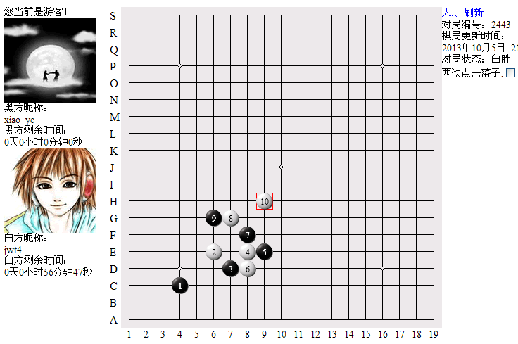
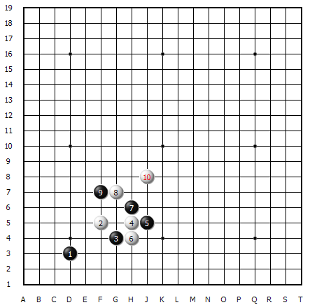
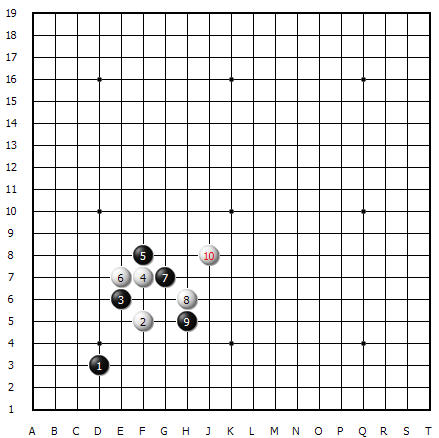

【暑假杯】一盘没有下完的棋――缺损的世纪之战
首页
五子棋交流
#1 【暑假杯】一盘没有下完的棋――缺损的世纪之战 作者：蓝天蓝 发表时间：2014-5-22 17:30:52
一盘没有下完的棋――缺损的世纪之战
作者|:jwt4
【讲五堂】 jwt4 vs 【华电】 xiao_ye 对战解说
http://game.freewzq.com/offlineDisplayGame.html?html=6155071&id=2443

这是第九轮的比赛，讲五堂四台VS华电四台，讲五堂执白胜出。
。

这是一盘没有下完的棋，因为对家不落子超时，我胜出。
这个3手貌似和先前的3手不一样，前几手也觉得和先前的开局有些别劲。其实只不过是方向转变而已。

这个同比赛的棋局是一样的。
对阵双方剑拔弩张，一触即发，鹿死谁手，实难预料。
不知道对手为啥就不走棋了。
如果能够接着下完。这盘棋就是这次家族赛中最震憾的对弈。
对家输棋是小事。
对家扼杀了五子棋一手交换史上的一盘超世纪之精彩对局。
损失老大了